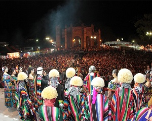
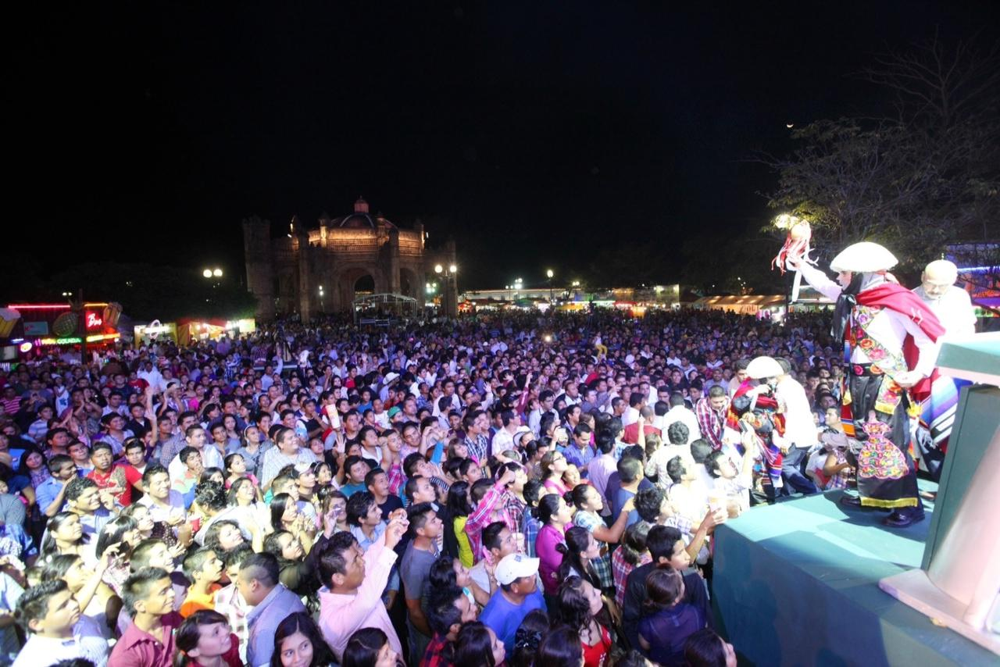
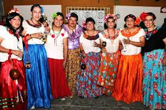
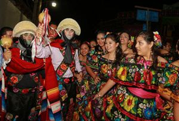
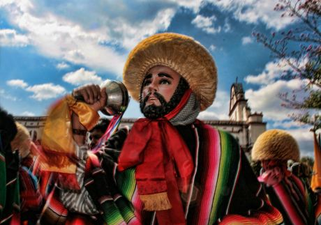

Cabe destacar que la Fiesta Grande consiste principalmente en la danza de los Parachicos, la salida de las chuntaes que anuncian la Fiesta, la salida de los carros alegóricos, la coronación de la reina del pueblo, el cambio de priostes (o cuidadores de los santos). La vestimenta tradicional del Parachico comprende una máscara de madera, una “montera” o peluca de ixtle, sarape tipo Saltillo y pantaloncillos con flecos sobre pantalón negro. El origen de la danza de los Parachicos se remonta al año 1711. De acuerdo con la leyenda todo comenzó con el arribo a Chiapa de Corzo de Doña María de Angulo, señora de gran fortuna y alcurnia quien había llegado a la población con su hijo enfermo de una parálisis y en busca de un manantial milagroso conocido como el manantial de Cumbujuyú (que en la lengua de los “Chiapa” quiere decir “baño de jabalí”). Doña María también acude a los curanderos del pueblo en busca de un remedio para el niño. Un día, la gente se organizó para divertir al niño con una danza que fuera alegre y de mucho colorido. Entonces se vistieron con sarapes, máscaras, monteras (pelucas de ixtle), fajas, pañuelos, chalinas y animaron su baile con música de tamboril y flauta de carrizo. De esta forma surgió la danza y su nombre, basado en su función original “para el niño” o “para el chico”. A partir de entonces se le relaciona con la fiesta de San Sebastián Mártir, patrono de Chiapa de Corzo, cuya imagen es homenajeada cada año. Doña María de Angulo es recordada con cariño y respeto por la gente del pueblo, ya que la leyenda cuenta también que durante una época de hambruna que se desató sobre Chiapas a principios del siglo XVIII ella dio de comer a los pobres de la región. En correspondencia a la generosidad de la señora Angulo, su imagen es homenajeada cada año con desfiles de carros alegóricos, cofradías, mayordomías y la danza de los Parachicos. Además cada año una joven del pueblo es elegida secretamente por el consejo de la fiesta como reina representando a esta famosa señora. La tradicional Fiesta Grande de Chiapa de Corzo se realiza en el mes de enero, fechas durante los cuales los visitantes podrán visitar la ciudad para ver los tradicionales recorridos de parachicos y chuntáes o conciertos de artistas
Muncipio de Chiapa de Corzo
Parque de Chiapa de Corzo
Recorridos de los Chunta, recorrido de los parachicos, desfiles, ventas de alimentos, juegos mecánicos y la culminación con el combate naval.





posicione el mouse sobre las imágenes